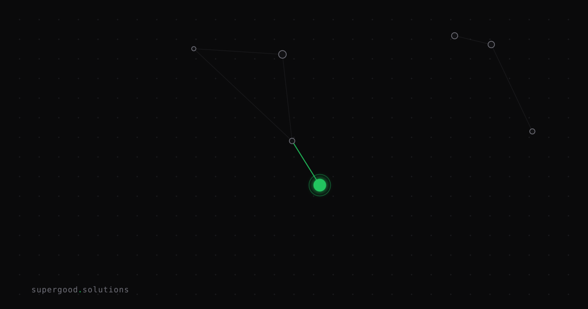

Cheap Model + Good Routing Beats Expensive Model Alone
TL;DR: Teams obsess over model choice (GPT-4 vs Sonnet vs Haiku) but ignore routing strategy—which model handle which query—yet routing decisions often deliver 3–5× better cost and latency than upgrading to a bigger model. Build routing first; model choice is secondary.
Key Insight
The conventional wisdom is "use the best model available." The contrarian reality: most queries don't need it. A Haiku with smart routing (simple queries → small model, complex → big model) beats a universal GPT-4 deployment on cost, latency, and often accuracy. Teams that route strategically spend 60–70% less on inference and ship faster. Model choice is important; routing strategy is critical.
Why Teams Miss This
- Upgrade instinct: When a deployment underperforms, the default response is "use a better model." Rarely does anyone ask "are we sending this query to the right model?"
- Routing feels hard: Classification, cost-benefit math, fallback logic—it seems like overhead. In practice, a 20-line classifier saves weeks of model optimization.
- Vendor incentives: Model companies evangelize model quality, not routing. It's less exciting to talk about than "our new 200B parameter giant," but it's where the real ROI lives.
- Measurement blindness: Teams measure "did my answer improve?" but not "could I have shipped this 10s faster or 80% cheaper with routing?"
How to Actually Do It
Start with a simple routing decision tree:
- Classify the query (1–2 sentences, low-context understanding)
- Is this a factual lookup? → Retrieval + small model (Haiku)
- Is this a logic/math problem? → Chain-of-thought + medium model (Sonnet)
- Is this a novel reasoning task? → Full context + large model (Opus)
2. Set cost budgets (not hard caps—targets)
- Factual: max $0.0001 per query
- Logic: max $0.001 per query
- Novel: no cap (rare, high-value cases)
3. Build a fallback chain
- Try small model first. Measure confidence.
- If confidence < 0.7 or latency > 2s, escalate to next tier.
- Log every escalation—they're gold for refining your classifier.
4. Example (pseudocode):
def route_query(query: str) -> Model:
confidence = classify_complexity(query)
if confidence == "simple":
return HAIKU # ~$0.0001 per query
elif confidence == "medium":
return SONNET # ~$0.003 per query
else:
return OPUS # ~$0.015 per query
def classify_complexity(query: str) -> str:
# Token count, keyword presence, grammar structure
# Can be a simple heuristic or a tiny model itself
if len(query) < 50 and "what is" in query.lower():
return "simple"
elif any(word in query.lower() for word in ["why", "how", "analyze"]):
return "medium"
else:
return "complex"5. Iterate on your classifier (not your models)
- Every wrong routing decision is a signal. Did you escalate unnecessarily? Miss an easy win? Adjust the thresholds and keywords.
- Most teams iterate on the model (fine-tune, prompt engineering) when they should be iterating on the router.
What We've Learned
The teams we see shipping the fastest and cheapest don't have the "best" models—they have the smartest routers. One AI infra team at a large fintech firm cut inference costs by 68% in Q2 2026 by building a four-tier routing strategy (no model changes). Another saw latency drop from 3.2s to 800ms by segregating retrieval queries to fast smaller models.
Start here: measure your current deployment. What % of queries could be answered with a smaller model? Build a classifier for that % first. You'll ship value faster than waiting for the next GPT release.
Sources
- Why Smaller Models Win in Production — Hugging Face on model efficiency and distillation patterns
- The Cost Structure of Modern LLM Inference — a16z on production deployment trade-offs and routing strategies
- Confident Learning: Estimating Uncertainty in Dataset Labels — confidence scoring for query classification
- Anthropic Model API Pricing — tier comparison reference for routing budget math